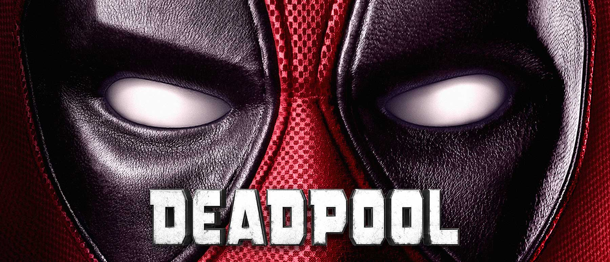
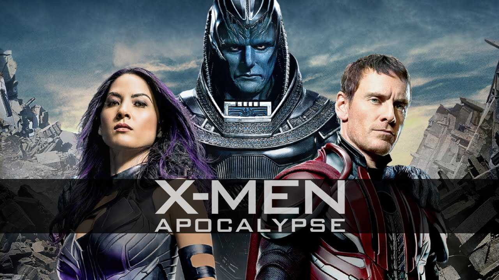
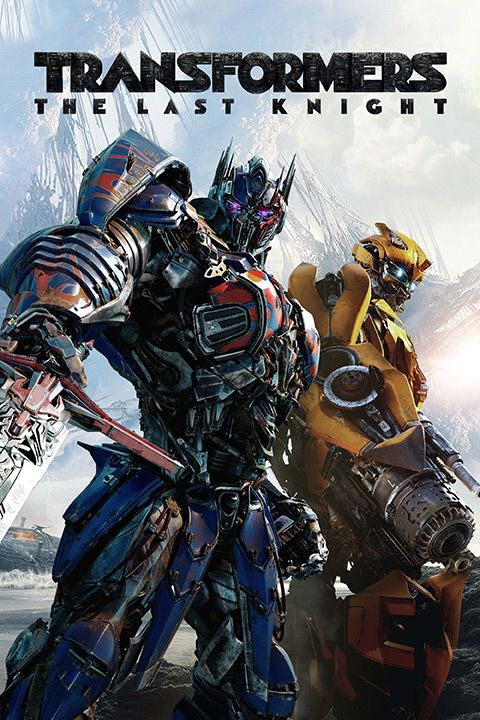

MY list of movies
The Godfather(1972)

Genre: Drama
Release date:1971
Stars: Marlon Brando, Al Pacino, James Caan
Short discription: The Godfather is a 1972 American crime film directed by Francis Ford Coppola and produced by Albert S. Ruddy, based on Mario Puzo's best-selling novel of the same name. It stars Marlon Brando and Al Pacino as the leaders of a fictional New York crime family. The story, spanning 1945 to 1955, chronicles the family under the patriarch Vito Corleone (Brando), focusing on the transformation of Michael Corleone (Pacino) from reluctant family outsider to ruthless mafia boss.
DEADPOOL
Genre: Action/Adventure / Comedy
cast actors: Brianna Hildebrand, Ed Skrein, Gina Carano, Morena Baccarin, Ryan
Release date: 2016
Deadpool is a 2016 American superhero film based on the Marvel Comics character of the same name, distributed by 20th Century Fox. It is the eighth installment of the X-Men film series, and the first standalone Deadpool film. Directed by Tim Miller from a screenplay by Rhett Reese and Paul Wernick, the film stars Ryan Reynolds as Wade Wilson / Deadpool alongside Morena Baccarin, Ed Skrein, T. J. Miller, Gina Carano, and Brianna Hildebrand. In the film, Wilson hunts down the man who gave him mutant abilities, but also a scarred physical appearance, as the antihero Deadpool.
X Men
Genre:Action/Adventure
Release date:
Casting actors: James McAvoy, Jennifer Lawrence, Lucas Till, Michael Fassbender, Nicholas Hoult, Olivia Munn, Oscar Isaac, Rose Byrne, Sophie Turner, Tye Sheridan
Short discription: Following the critically acclaimed global smash hit X-Men: Days of Future Past, director Bryan Singer returns with X-MEN: APOCALYPSE. Since the dawn of civilization, he was worshipped as a god. Apocalypse, the first and most powerful mutant from Marvel's X-Men universe, amassed the powers of many other mutants, becoming immortal and invincible. Upon awakening after thousands of years, he is disillusioned with the world as he finds it and recruits a team of powerful mutants, including a disheartened Magneto (Michael Fassbender), to cleanse mankind and create a new world order, over which he will reign. As the fate of the Earth hangs in the balance, Raven (Jennifer Lawrence) with the help of Professor X (James McAvoy) must lead a team of young X-Men to stop their greatest nemesis and save mankind from complete destruction.
Transformers the last knight2017
the Transformers leap into action once more in this sequel from Paramount Pictures and director Michael Bay. ~ Jason Buchanan, Rovi
Rating: PG-13 (for violence and intense sequences of sci-fi action, language, and some innuendo)
Genre: Action & Adventure, Drama, Science Fiction & Fantasy
Directed By: Michael Bay
Written By: Ken Nolan, Matt Holloway, Art Marcum In Theaters: Jun 21, 2017 Wide On Disc/Streaming: Sep 26, 2017 Box Office: $130,104,634 Studio: Paramount Pictures